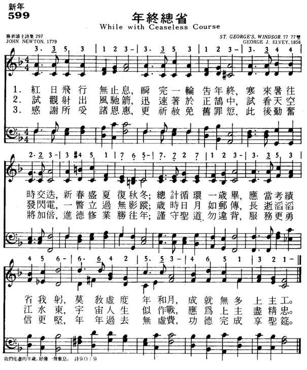

|
|
|
|
|
1 While with ceaseless course the sun 2 As the winged arrow flies 3 Thanks for mercies past receive; Amen. |
599年终总省
1.红日飞行无止息，瞬完一轮告年终，
寒来暑往时交迭，新春盛夏复秋冬； 总计循环一岁毕，应当考绩省我躬， 莫教虚度年和月，成就无多上主工。 2.试观射出风驰箭，迅速著于正鹄中， 试看天空发闪电，一瞥立过无影踪； 岁时日月如邮传，长逝滔滔江水东， 宇宙人生似作战，应为上主尽精忠。 3.感谢所受诸恩惠，更祈赦免旧罪愆， 此后勤奋将加倍，进德修业胜往年； 谨守圣道勿违背，服务更勇信更坚， 年年过去无虚费，功德完成享圣筵。 |
|
|
https://www.mred365.cn/szxg/7602.html
 https://hymnary.org/hymn/TPH2018/page/256 ST. GEORGE'S WINDSOR George J. Elvey
|
||
|
|
|
|

-

https://youtu.be/iSmRe1KdiMM -
Come, Ye Thankful People, Come (St George's Windsor) https://youtu.be/1KIV5xp4C0w
| Text: | While with ceaseless course the sun |
| Author: | John Newton |

Notes
While with ceaseless course the sun. J. Newton. [New Year.] Published in his Twenty Six Letters on Religious Subjects, &c, by Omicron, 1774, in 3 stanzas of 8 lines, and headed, "For the New Year." It was repeated in R. Conyer's Psalms & Hymns the same year, and again in the Olney Hymns, 1779, Bk. ii., No. 1. It is in extensive use in Great Britain and America. In some collections stanzas ii., iii. are given as, "As the winged arrow flies," but this is not so popular as the full text.
--John Julian, Dictionary of Hymnology (1907)
Tune Information
| Title: | ST. GEORGE'S WINDSOR (Elvey) |
| Composer: | George J. Elvey (1856) |
| Meter: | 7.7.7.7 D |
| Incipit: | 33531 23335 31233 |
| Key: | G Major |
| Copyright: | Public Domain |
| Tune: | ST. GEORGE'S WINDSOR |
| Composer: | George J. Elvey |
| Short Name: | George J. Elvey |
| Full Name: | Elvey, George J., 1816-1893 |
| Birth Year: | 1816 |
| Death Year: | 1893 |
George Job Elvey (b. Canterbury, England, 1816; d. Windlesham, Surrey, England, 1893)

As a young boy, Elvey was a chorister in Canterbury Cathedral. Living and studying with his brother Stephen, he was educated at Oxford and at the Royal Academy of Music. At age nineteen Elvey became organist and master of the boys' choir at St. George Chapel, Windsor, where he remained until his retirement in 1882. He was frequently called upon to provide music for royal ceremonies such as Princess Louise's wedding in 1871 (after which he was knighted). Elvey also composed hymn tunes, anthems, oratorios, and service music.
Bert Polman
Notes
George J. Elvey (PHH 48) composed ST. GEORGE'S WINDSOR as a setting for James Montgomery's text "Hark! The Song of Jubilee," with which it was published in Edward H. Thorne's Selection of Psalm and Hymn Tunes (1858). The tune has been associated with Alford's text since publication of the hymn in the 1861 edition of Hymns Ancient and Modern. ST. GEORGE'S WINDSOR is named after the chapel in Windsor, England, where Elvey was organist for forty-seven years.
This serviceable Victorian tune is held together by the rhythmic motive of the opening phrase. Sing the opening stanzas in parts, but sing the prayer of stanza 4 in unison. Use of the descant by C. S. Lang (PHH 253) with stanza 4 may suggest a foretaste of heaven's glory.
--Psalter Hymnal Handbook